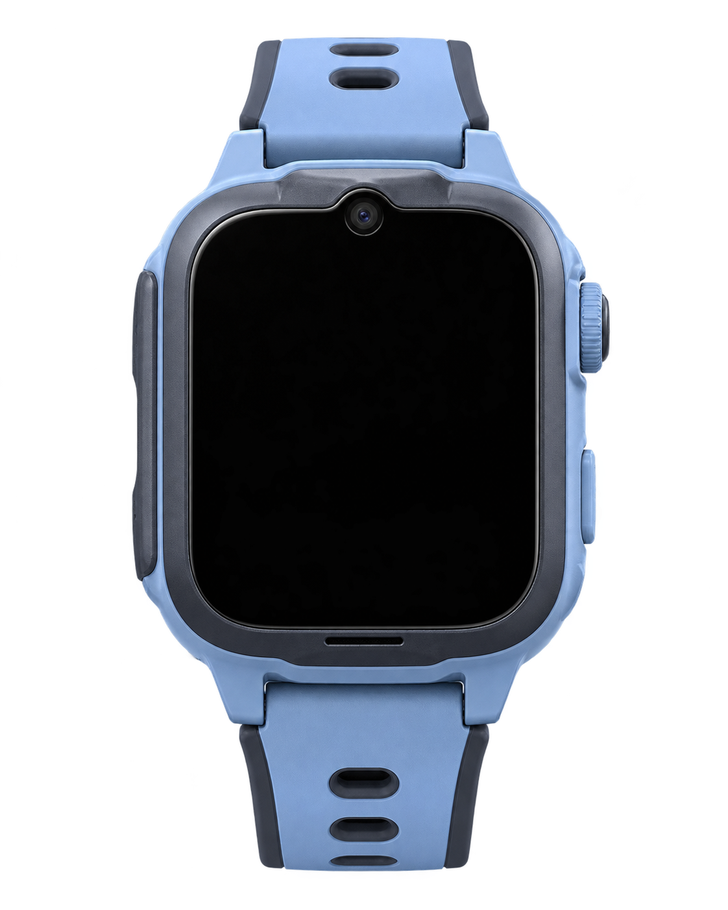

FROM SOURCE IMAGE TO FINAL DELIVERY
手表互联
内容生产工作台
把素材处理、图生视频、字幕编排与最终裁剪装进同一套工作台。这里展示的不只是一条成片，而是我如何把生产与交付收成一条可继续运转的链路。
- 07
- 单词生产任务
- 06
- 制作阶段
- 01
- 统一交付出口
DEVICE PREVIEW / 真实设备预览

当前成片
WOOF
吠叫
演示放大模式 · 便于查看表盘内容
ONE CLICK IS A DESIGNED SYSTEM
一键生产，背后是六段可控流程
我负责的不只是生成画面，而是把分散工具组织成可追踪、可复用、可交付的平台。
FINAL DELIVERY / MY RESPONSIBILITY
生成不是终点，
最终交付才是。
我根据电话手表的显示比例、播放时长和交付规范继续完成视频裁剪、字幕安全区校正、音画同步与批量命名，保证生成结果真正进入设备。
- 01目标规格先定义尺寸、时长与安全区
- 02视频裁剪按内容焦点重构设备画幅
- 03批量交付校验、命名并形成统一出口